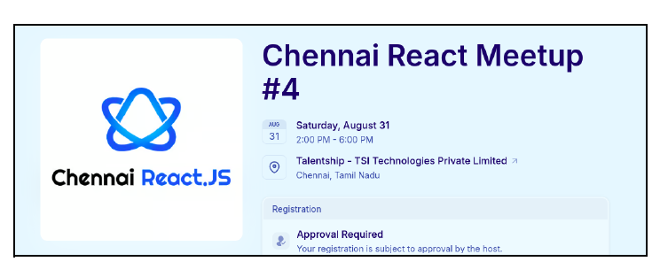

Html Basic Elements Task
Weekly Meeting Notes:
- Session:
- Batch3:
- Technical Session:
- Flowcharts, Number System, Coding Standards, Internet Basics, and Terminal Commands Sessions were conducted for Batch 2.
- Technical Sessions have been started..
- HTML basics tags/elements, images, links, and lists had been completed.
- The remaining topics are tables, grouping tags, forms, iframe, and audio/video tags.
- Non-Technical Session:
- Gsuite, LSRW, Feedback, Toastmasters, and Meeting Etiquette sessions were conducted lastweek.
- Communication Sessions are scheduled for the current week.
- Batch2:
- Assessment:
- Assessments are evaluated and marks are provided for batch 2.
- 1on1 is also conducted for batch 2.
- Projects:
- They are about to complete their full-stack projects.
- Other Happenings:
- Technical Events:
- A few students from Batch 2 attended the Chennai React 3 event last month.
- A couple of students have registered for the upcomingchennai React 4 event Event Link

- Non-Technical Events:
- 2 students from Batch 2 attended the board games event that happened at Adyar last week